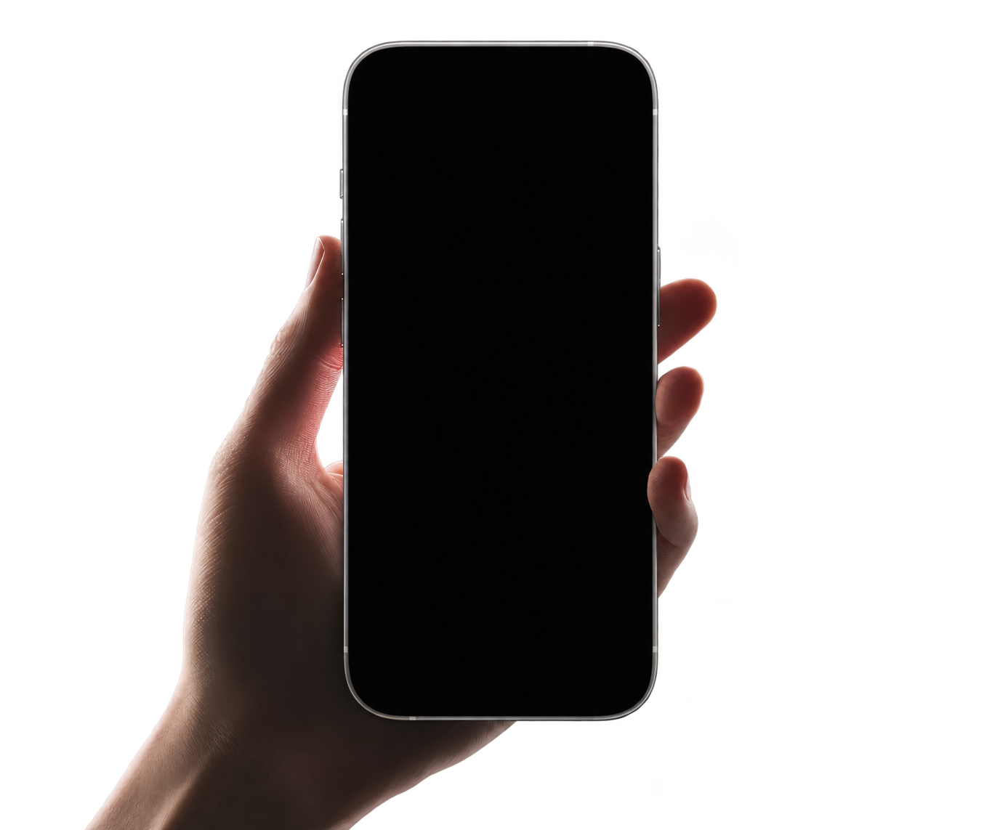

Backed by Y Combinator
The voices in your head.

Tap and hear the book in audora way

Tap and hear the book in audora way
Paste a link from Wattpad, AO3, Reddit, or Substack.
Or upload an epub, pdf, docx, or txt.
Audora reads the text and finds every speaking part.
Narration, dialogue, and each character gets a distinct voice.